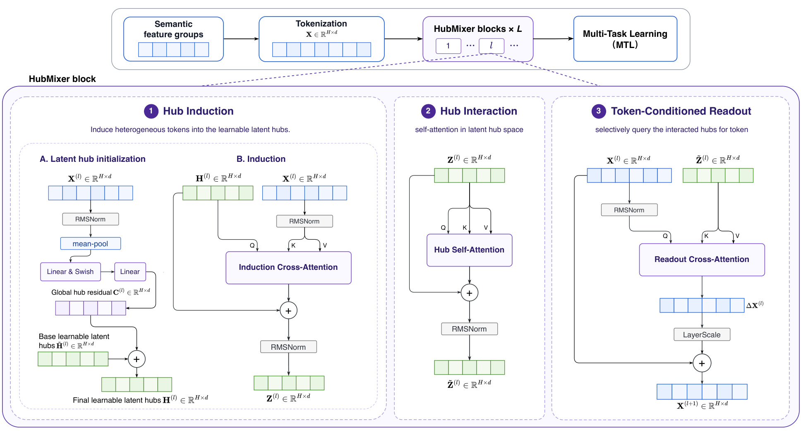
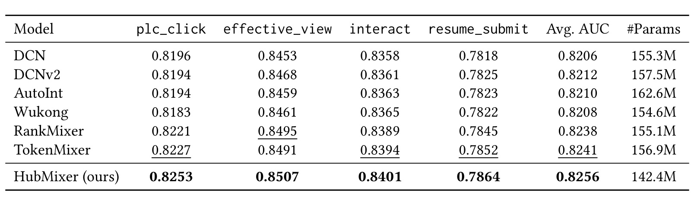
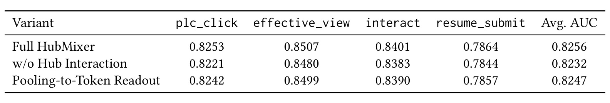
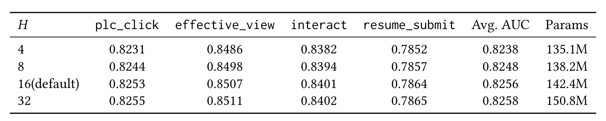
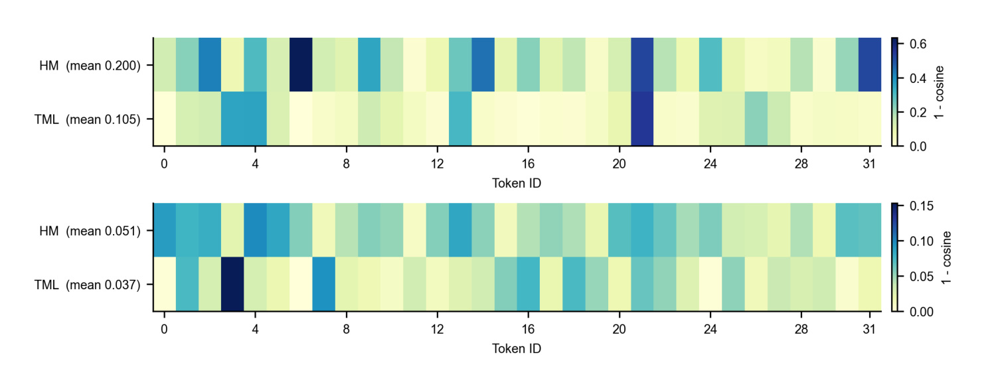
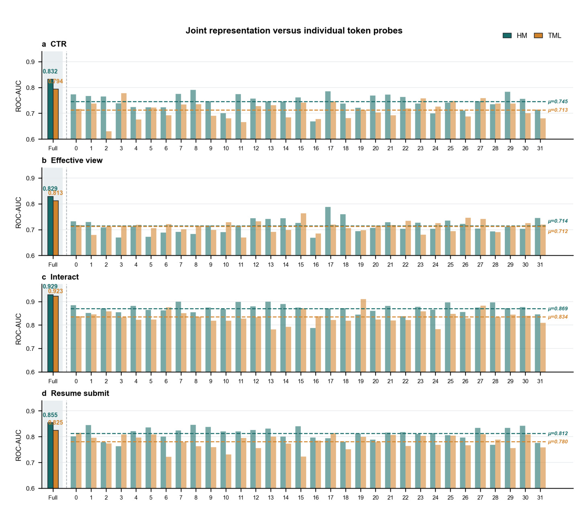

HubMixer：面向参数高效推荐特征交互的渐进式潜在枢纽混合
HubMixer 由快手科技 Jie Zhou 等人提出，合作机构包括清华大学。论文于 2026 年 8 月 28 日提交至 arXiv，当前是带有占位会议信息的预印本，因此不应把它表述为已被某个会议录用。论文入口：arXiv:2608.27991。本轮未核验到独立的 HubMixer 官方代码仓库或项目页。
工业推荐中的用户画像、行为序列、物品属性、上下文和统计信号并不位于同一语义空间，有效交互又通常是稀疏且随样本变化的。在原始异质 token 空间中直接混合所有 token，会让模型把容量消耗在发现“谁应该和谁交互、信息应该如何路由”上。
[toc]
1. 背景和问题
排序模型的输入往往已经不是一串同质量的离散 ID。一个工业样本可能同时包含年龄或地域等用户画像、长短期点击序列、职位或视频内容属性、当前流量场景、实时反馈与统计信号。它们的稀疏性、时间尺度和业务含义都不同。对一个求职意图强的用户，历史行为与职位类别可能是高价值组合；对另一个样本，时间和地域上下文可能才是决定信号。因此，“两个 token 都在输入里”不等于“它们在这个样本上值得高强度交互”。
传统特征交叉路线各有侧重。FM 明确建模二阶交互，DCN/DCNv2 用交叉网络提升阶数与表达力，AutoInt 引入自注意力，Wukong 则进一步强调容量扩展。标准自注意力能根据当前内容产生 token-token 权重，但对 $T$ 个 token 建立稠密 $T\times T$ 关系，无论一对 token 是否具有业务上的相关性，都要进入候选交互空间。RankMixer、TokenMixer 一类方法用更规整、更适合硬件的 mixing 算子缓解计算问题，可它们仍然需要在原始异质 token 空间内自行找到有用结构。
HubMixer 的切入点因而不是单纯把 attention 换成更快的 MLP，而是重新定义交互发生的空间：让 $H$ 个潜在 hub 先从 $T$ 个原 token 中归纳信息，再仅在紧凑 hub 空间做高阶交互，最后由每个原 token 按自身状态读回需要的全局语义。当 $H\ll T$ 时，两次 token-hub 交叉注意力的主要路由规模随 $TH$ 增长，而不是 $T^2$。更关键的是，hub 形成了一种架构归纳偏置：模型容量首先用于学习少量语义中心及其路由，而不是平铺到所有 token 对。
这个问题与 Perceiver、Q-Former 或 OneRec 中的潜在 query 有亲缘性，但目的不同。Q-Former 主要在两种模态编码器间构建紧凑接口，OneRec 中的查询主要压缩长期行为偏好。HubMixer 不只把输入压成固定长度：它要在 hub 内部产生交互，再把结果分别写回每个 field token。这个“归纳—交互—回写”闭环同时追求两件事：一方面在中间空间实现参数集中使用，另一方面保留原 token 的 field identity，以便下游多任务头仍能分辨用户、职位、视频和场景信号。
参数效率的真正意义也需要在这个背景下理解。如果一个模型只是统一压缩所有 field，它可能用更少参数换来语义丢失；如果完全展开 token-token 关系，又会把容量和计算投入大量弱相关对。HubMixer 尝试走第三条路：使用小型潜在空间组织关系，却把增强结果以 token 为单位返回。因而评价它时不能只看平均 AUC，还要检查是否每个任务都受益、参数是否真的下降、中间三阶段是否都必要，以及 token 表示的变化是否包含可读取的任务信息。
从证据责任看，论文需要回答三个层次的问题。第一，精度增益是否真的出现在多个排序目标上，而非某一个指标的偶然波动。第二，增益是否来自 induction、hub interaction 与 token-conditioned readout 的结构，而非单纯更多参数。第三，离线 AUC 变化是否能迁移到真实招聘转化。后文的主结果、消融、hub 数量扫描、表示分析和线上 A/B 分别对应这些问题，但其外推边界始终是快手短视频招聘业务，不能直接扩展为所有推荐场景的普遍结论。该业务的用户意图、漏斗长度和特征组成都可能与电商或通用内容消费显著不同，而潜在 hub 能否形成稳定语义中心，正取决于这种数据结构。
2. 方法
2.1 Tokenization 与输入条件化的潜在 hub
方法从保留特征组语义开始，而不是把全部 embedding 压平成一个无结构向量。这一选择使后续每次回写都有明确的 field 接收者，也让堆叠 block 能在不破坏 token 数量的前提下重复组织跨特征语义，为多任务头留下可分辨的输入接口。原文公式 (1) 将输入写为：
符号解释：$T$ 是特征 token 数，$d$ 是每个 token 的维度，$x_t$ 对应一个具有明确语义的特征组或 field 表示，$X$ 是整个样本的 token 矩阵。这个定义决定了最后的输出仍是 $T$ 个 token，HubMixer 不会用一个池化向量永久取代 field 级身份。
每个第 $l$ 层 block 有 $H$ 个基础可学习 hub $\widetilde H^{(l)}\in\mathbb{R}^{H\times d}$，它们在所有样本间共享。若只有这组静态原型，不同请求的路由起点完全相同，会削弱样本相关性。作者因此先对当前层 token 做均值池化：
符号解释：$p^{(l)}\in\mathbb{R}^{d}$ 是第 $l$ 层的全局样本摘要，$x_t^{(l)}$ 是该层第 $t$ 个 token。均值操作本身很简单，它的用途不是直接作为排序表示，而是提供生成 hub 残差的请求级条件。随后两层 MLP 将它展开为 $H\times d$：
符号解释：$W_1^{(l)},W_2^{(l)}$ 和 $b_1^{(l)},b_2^{(l)}$ 是两层感知机参数，$\sigma$ 是 Swish，$\phi$ 负责将输出重塑为 $\mathbb{R}^{H\times d}$，$C^{(l)}$ 是输入条件化残差，$H^{(l)}$ 是真正进入 induction 的 hub。这里的折中很明确：共享原型提供稳定的语义起点，样本残差让它们针对当前请求偏移。它没有完全动态生成 hub，因而节约了条件网络容量，但也可能限制强场景分化流量的路由灵活性。

Figure 1 要按信息流而不是按框的数量来读。顶部把语义特征组 tokenization，堆叠 $L$ 个 HubMixer block，最终将保留 field 身份的 token 交给 MTL。下方展开一个 block：左侧 A 支路用 RMSNorm、mean-pool 和两层映射产生紫色的全局 hub 残差，它与绿色基础 hub 相加；B 支路再让这些 hub 作为 query，从蓝色 token 中选择性读取。中间只对 $H$ 个 hub 做自注意力，这是高阶交互被集中的位置。右侧则反转 query 的角色：每个蓝色 token 查询交互后的绿色 hub，得到自己的 $\Delta X^{(l)}$，经 LayerScale 后残差写回。图中两次交叉注意力的 Q/K/V 方向非对称，恰好对应“先由 hub 归纳 token，再由 token 取回 hub 语义”。这也说明方法并非一个只保留压缩表示的瓶颈模型：block 输出仍是 token 集，才能在深度上继续渐进式精炼。
2.2 Hub Induction 与 Hub Interaction
完成初始化后，hub induction 使用归一化 token $\widetilde X^{(l)}=\operatorname{RMSNorm}(X^{(l)})$ 作为 key/value，使用条件化 hub 作为 query。这是一个从长度 $T$ 到长度 $H$ 的非对称读取界面，其路由权重在训练与推理时都根据当前样本现场计算：
符号解释：$H^{(l)}\in\mathbb{R}^{H\times d}$ 是查询端，$\widetilde X^{(l)}\in\mathbb{R}^{T\times d}$ 是被读取的 token，$Z^{(l)}\in\mathbb{R}^{H\times d}$ 是归纳后 hub。交叉注意力权重随样本内容变化，所以不同 hub 可以软性专门化为用户兴趣、职位语义、场景信号或用户-物品匹配中心，却不需要人工先验指定某个 hub 只接收某组 field。其失败边界也来自这种软路由：若多个 hub 收敛到相似注意模式，实际有效容量可能远小于 $H$。
归纳只得到若干压缩摘要，并不自动意味着已经建模它们之间的高阶关系。例如，一个 hub 可能归纳用户长期意图，另一个 hub 可能归纳当前职位和场景，两者的匹配仍需要显式信息交换。Hub interaction 因而对 $Z^{(l)}$ 做自注意力：
符号解释：$Z^{(l)}$ 是未交互的归纳 hub，$\widetilde Z^{(l)}$ 是高阶交互后的 hub，残差连接与 RMSNorm 用于稳定堆叠。计算在 $H$ 个 hub 上发生，而 $H\ll T$，因此自注意力的二次项从 token 数转移到小得多的 hub 数。核心贡献不是取消高阶交互，而是先用内容自适应路由把信息集中到潜在语义中心，再把昂贵的交互容量用在这个紧凑空间。
2.3 Token-Conditioned Readout 与渐进式残差精炼
若把所有交互后 hub 池化成一个向量并广播给每个 token，用户画像 token 与职位类别 token 将收到完全相同的更新，与“异质 field 职责不同”的出发点冲突。下游多任务头可能因此难以判断全局信号究竟应归因于哪类 field。HubMixer 让每个 token 作为 query 执行反向交叉注意力：
符号解释：$\widehat X^{(l)}$ 是用作查询的归一化 token，$\bar Z^{(l)}$ 表示交互后并作为 key/value 的 hub，$\Delta X^{(l)}\in\mathbb{R}^{T\times d}$ 是逐 token 读出信号。同一组 hub 像一个共享语义总线，但每个 token 根据自己的 query 获得不同混合，因此“全局信息可共享”与“field identity 要保留”可以同时成立。
读出不会直接覆盖原表示，而是经过逐维 LayerScale 残差注入：
符号解释：$\gamma^{(l)}\in\mathbb{R}^{d}$ 是可学习的 LayerScale 参数，$\odot$ 是按元素乘法并沿 token 维广播，$X^{(l+1)}$ 是该 block 的 token 级输出。LayerScale 为堆叠时的回写幅度提供可学习闸门，避免早期训练中未成熟的 hub 信号大幅破坏原 token。多个 block 堆叠后，浅层可先建立相对直接的跨 field 模式，更深层再基于已增强 token 重新归纳和交互，这就是标题中“progressive”的具体含义。不过，若 $\gamma^{(l)}$ 长期接近零，对应 block 可能实际上未使用 hub 信息；论文未报告 LayerScale 分布或逐层删除实验。
2.4 多任务预测与加权优化
最后一层产生的 token 被拼接为实例级表示，再交给多任务头：
符号解释：$L$ 是 HubMixer block 层数，$r$ 拼接所有最终 token，$k\in\{1,\ldots,K\}$ 索引排序任务，$\operatorname{MTL}_k$ 是第 $k$ 个任务头，$\widehat y_k$ 是对应二元事件概率。HubMixer 负责共享的跨特征交互，任务头负责从增强 token 中抽取点击、有效观看、交互和简历投递各自的信号。
每个任务用二元交叉熵，总目标是加权和：
符号解释：$y_k$ 是第 $k$ 任务标签，$\ell_k$ 是其交叉熵，$\lambda_k$ 是任务权重，$\mathcal L$ 是端到端优化目标。训练时，来自四个任务的梯度共同更新 hub 原型、输入条件网络、三阶段注意力和 MTL 头；推理时，多个预测被组合成综合排序分。这意味着离线的单任务 AUC 不能自动推导最终线上转化：$\lambda_k$ 和线上组合规则都是结果链条的一部分，而原文只说各模型使用相同权重，没有披露具体数值。
3. 实验结果
3.1 数据、任务、基线与可比性
离线数据来自快手短视频招聘业务，该业务把职位相关短视频和招聘线索分发给潜在感兴趣用户，论文称场景覆盖约 4000 万日活用户。作者收集一个月行为日志，构建超过 10 亿样本的内部数据集，包含用户画像、行为序列、职位、短视频、上下文和统计特征。四个目标是 plc_click、effective_view、interact 与 resume_submit，覆盖从初始点击、有效消费、交互到简历投递的漏斗。离线指标为逐任务 AUC，没有把四项折成一个不透明总分。
基线包括交叉网络 DCN/DCNv2、自注意力交互 AutoInt、大规模交互 Wukong，以及近期 token-mixing 模型 RankMixer 和 TokenMixer。论文称所有方法共用特征预处理、embedding 维度、优化器、batch size、训练日程和多任务权重；Mixer 类统一使用 32 个 token 和 2 层 block，HubMixer 默认 $H=16$。这些控制有利于模型间比较，但论文没有披露时间切分、训验比例、随机种子、完整超参数和多次运行方差，数据也不是可公开获得的。所以“同配置”是论文报告事实，不等于外部已可独立复现。
3.2 主结果：更少参数下的一致 AUC 提升

Table 1 中，HubMixer 在 plc_click、effective_view、interact、resume_submit 上分别为 0.8253、0.8507、0.8401、0.7864，四项均是表内最高，Avg. AUC 为 0.8256。最强 token-mixing 对照 TokenMixer 的平均值是 0.8241，RankMixer 是 0.8238；而 DCN、DCNv2、AutoInt 和 Wukong 位于 0.8206–0.8212。这里最有价值的不是单个加粗数字，而是增益跨越了早期参与和深层转化目标：相对 TokenMixer，四项绝对 AUC 差分别约为 0.0026、0.0016、0.0007 和 0.0012，不是只把某个头的信号挪到另一个头。参数量列则显示 HubMixer 为 142.4M，少于 RankMixer 的 155.1M 和 TokenMixer 的 156.9M，甚至低于表中多数传统基线。因而表格支持的严格结论是：在这套内部数据和共同实验设置下，HubMixer 实现了更好的 AUC–参数折中。它不能单独证明训练 FLOPs、显存、推理延迟或硬件利用率也同比例改善，因为这些指标未出现在表中。
3.3 模块消融与 hub 数量权衡

Table 2 分别破坏了两个关键环节。“w/o Hub Interaction”保留 token-to-hub 归纳和后续读出，但跳过 hub 间自注意力，Avg. AUC 从 0.8256 降到 0.8232，四任务都下降。这说明少量潜在 query 仅作为压缩摘要还不够；跨特征的高阶关系需要在 hub 空间显式建模。“Pooling-to-Token Readout”保留 hub interaction，却把交互后 hub 池化并统一注入所有 token，平均值降到 0.8247。它的损失小于删除 hub interaction，表明全局 hub 信息本身有用，但让每个 token 依据自身查询选择信息可以进一步保留 field-specific 差异。这两个消融并没有单独删除输入条件化残差，也没有比较共享 hub 与完全动态 hub，因此对公式 (2)–(4) 的独立贡献仍缺少定量分解。

Table 3 把 $H$ 从 4、8、16 增加到 32。$H=4$ 时 Avg. AUC 为 0.8238、参数 135.1M；$H=8$ 时为 0.8248 和 138.2M；$H=16$ 时为 0.8256 和 142.4M。前三个点显示更大潜在空间确实能容纳更多交互模式，四项 AUC 也都随之增长。但从 16 增至 32，Avg. AUC 仅从 0.8256 到 0.8258，resume_submit 仅增 0.0001，参数却从 142.4M 增到 150.8M。因此 $H=16$ 是这个数据集和 32-token/2-block 配置下的经验拐点，而不是一个跨场景的常数。表格还反驳了一个过度简化解释：HubMixer 并非“hub 越多就持续更好”，而是存在容量不足、有效区间和边际收益饱和三个阶段。若转到 token 数更多、特征组更杂或延迟限制更严格的系统，应当重新扫描 $H$，并一起报告 FLOPs 和线上时延。
3.4 线上 A/B：业务转化证据与缺失信息
论文在快手基于内容的招聘短视频分发系统中运行 7 天 A/B，覆盖 7.2% 生产流量，主指标是简历投递转化率。HubMixer 相对 base model 提升 5.48%，原文称该提升具有统计显著性，并在实验后全量部署于该招聘业务。这一证据比只报离线 AUC 更接近真实价值，因为 resume_submit 是漏斗深处的线索目标，而非仅看浅层点击。但这个数字必须保留三重限定：它是特定招聘场景的相对变化，不是通用短视频 feed 收益；论文未给出绝对基线转化率；也未披露置信区间、$p$ 值、分流单元、样本量、其他守护指标或延迟变化。所以可以说“原文报告统计显著的 5.48% 提升”，却无法在本记录中独立复核显著性或排除同期干扰。
3.5 表示分析：更强更新是否携带任务信息
作者用逐 token 输入输出余弦距离测量每个 block 改变表示方向的程度：
符号解释：$n$ 索引样本，$i$ 索引 token，$l$ 是 block 层，$x_{n,i}^{(l)}$ 与 $x_{n,i}^{(l+1)}$ 分别是输入和输出表示，$D_i^{(l)}$ 是跨样本期望的方向改变。值越大只能说明注入引起的表示旋转越强，不自动意味着信息质量更高。

Figure 2 分两层对 32 个 token 给出热力带。第一层 HubMixer 的平均距离为 0.200，TokenMixer 为 0.105，前者接近后者两倍；第二层两者都明显变小，但 HubMixer 仍为 0.051，高于 0.037。层间下降符合渐进精炼的直觉：第一层对原始 token 做大幅交互注入，第二层在已增强表示上做更小的修正。热力颜色又不是水平均匀的：第一层中某些 token，例如约 6、21 和 31，变化远大于其他位置，支持 token-conditioned readout 不是给所有 token 广播同一扰动的解释。然而图中只给 Token ID，没有将 ID 映射回具体用户、职位或上下文 field，所以无法判断哪类语义实际获得最多回写，也无法验证 hub 是否学出了作者所说的语义专门化。
为了区分“改变更大”与“变得更有用”，作者冻结已训练 backbone，在每个 token 表示和所有 token 拼接表示上分别训练轻量线性分类器。如果只是无效旋转或噪声，线性探针不应更容易读出任务相关信号。

Figure 3 的四个面板对应 CTR、Effective view、Interact 和 Resume submit。每个面板最左侧 Full 是拼接实例级表示，0–31 是单 token 探针，青色 HM 代表 HubMixer，橙色 TML 代表 TokenMixer。Full 结果中，四任务分别是 0.832 vs 0.794、0.829 vs 0.813、0.929 vs 0.923、0.855 vs 0.825，HubMixer 均更高。逐 token 虚线均值在 CTR 上为 0.745 vs 0.713，Effective view 为 0.714 vs 0.712，Interact 为 0.869 vs 0.834，Resume submit 为 0.812 vs 0.780。大多数 token 上青色柱更高，但也有个别 token 的 TokenMixer 持平或胜出，因而更准确的表述是“多数 token 和拼接表示更可线性读出”，不是“每个 token 都更好”。该图与 Figure 2 构成两步证据：HubMixer 既造成更强且非均匀的 token 更新，更新后表示又通常包含更容易被线性头读取的任务信号。但线性可读性仍是诊断性证据，它不能证明哪个 hub 对哪组特征建立了可解释的因果交互。
4. 总结
4.1 我的判断与工程启发
HubMixer 最值得保留的思想是：对异质且交互稀疏的特征集，不必把所有高阶容量都投入原 token 对，可以用少量内容自适应的潜在中心承担语义路由，再把交互结果选择性写回原 token。这种设计不依赖人工特征组层级，也不牺牲 field identity，适合作为排序中共享交互 backbone。对个性化 RAG 或 Agent 记忆也有类似启发：面对来自长期偏好、当前会话、工具状态和检索证据的异质 token，可以先在小型潜在枢纽中组织跨源关系，再由不同下游模块按需读取，而不是无区别拼接所有上下文。
从实验看，主表、两个模块消融、$H$ 扫描、线上 A/B 和表示分析构成了相对完整的证据链：方法不是靠更多参数获胜，两个主要交互环节都有独立增益，最后还有一个特定业务转化指标作为线上支撑。但“参数更少”不是“线上延迟更低”的同义词；两次 cross-attention、小矩阵 kernel 效率和服务编译优化都会影响真实成本。复现时应同时采集 AUC、参数、FLOPs、峰值显存、batch 吞吐和 p50/p95/p99 延迟，才能验证“高效”的完整含义。
4.2 局限、风险与后续方向
局限至少有以下四点。第一，离线证据只有单个快手招聘业务的内部数据，样本很大但不能公开复现，也未证明在电商、广告、通用信息流或公开 CTR 数据上同样有效。第二，线上 5.48% 结果缺少绝对基线、置信区间、分流细节和守护指标，“统计显著”只能作为原文报告事实而无法独立复核。第三，论文用参数量讨论效率，却未报告训练与服务的 FLOPs、吞吐和延迟，$TH$ 级复杂度优势可能被 cross-attention 调度或小矩阵利用率部分抵消。第四，hub 专门化主要是机制解释，原文没有可视化 hub-to-field 注意力、专门化稳定性或多种子一致性；多个 hub 学成相似路由的 collapse 风险仍存在。此外，预印本保留会议和 DOI 占位符，未核验到官方代码，实现细节的可追溯性较弱。
后续可以优先做三组工作。其一，在公开数据和至少两个工业场景上实现 HubMixer，用多随机种子、相同训练预算与完整系统指标重新比较 RankMixer/TokenMixer，这能同时验证精度外推和硬件效率。其二，加入 hub 多样性正则、正交约束或负载均衡指标，并将 hub-to-field 路由与业务语义联系，用于判断更多 hub 饱和是容量足够还是发生 collapse。其三，比较共享原型+轻量残差、完全动态 hub 以及 task-conditioned hub/readout，因为点击与简历投递可能需要不同交互语义。若服务端成本仍高，还可将 hub 自注意力替换为 MLP 或稀疏专家混合，在保留 induction–interaction–readout 主线的同时测量真实延迟收益。